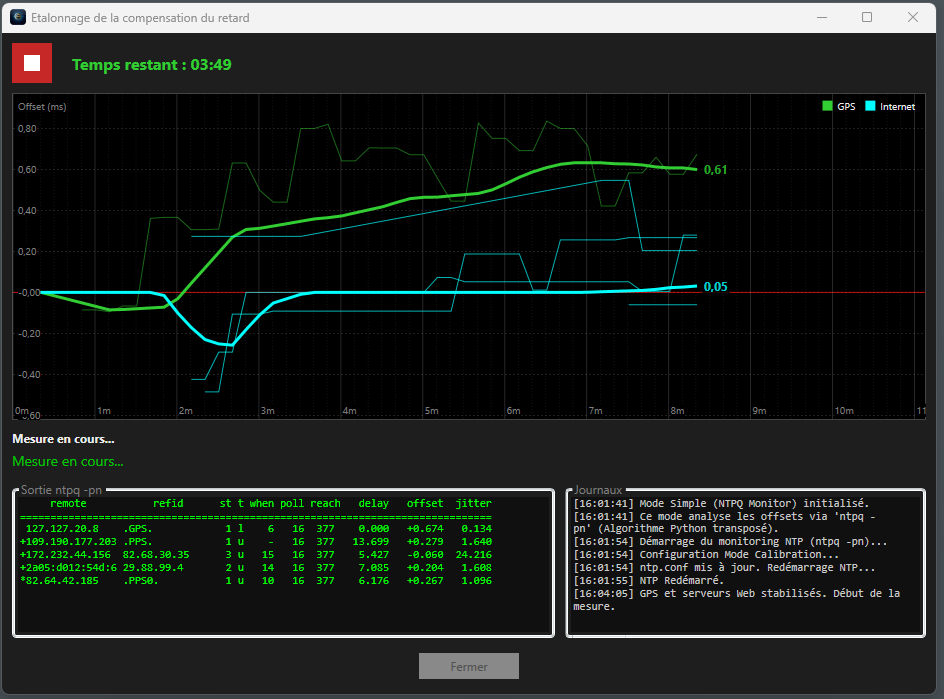

Software Manual
This guide details the installation, configuration, and use of the Time Reference NMEA application.
1. Application Installation
- Go to the Releases section of the GitHub project.
- Download the latest installer:
TimeReferenceNMEA_Setup_vX.Y.Z.exe. - Run the installation (administrator rights will be requested to manage the NTP service).
- An icon is created on your desktop.
2. Main Interface
The interface is designed to monitor precision at a glance. It consists of a main display area and a toolbar.

A. Display Area
This area groups real-time performance indicators:
- Clocks: Compares system time (Windows) and GPS time. A button allows switching between UTC and Local Time.
- Position: Latitude and Longitude.
- Status: Status message (e.g., "Fix GPS OK", "Searching for satellites...").
- Health (Score): A global reliability indicator (0-100%).
- 🟢 Green (> 90%): Stable system.
- 🟠 Orange (50-90%): Slight disturbances.
- 🔴 Red (< 50%): Critical problem.
- NTP Metrics:
- Offset: The residual deviation from the reference (ideally < 2ms).
- Jitter: Signal stability.
- NTP Service Status: Displays the technical status of NTP servers.
B. Button Area
The toolbar located at the bottom of the window provides access to features:
- ⚙️ Settings: Hardware and NTP service configuration.
- 📄 Logs: Event log.
- 📡 Signal Quality (IQT): Satellite reception analyzer (SNR, HDOP).
- 🌐 Peers: Shows or hides NTP source details.
- 🎯 Calibration: Assistant to compensate for hardware delay.
- 🔽 Mini Mode: Switches to transparent "Always on top" widget mode.
- 🎨 Theme: Changes appearance (Light, Dark, Red/Night).
3. First Start
At launch, the application checks for the presence of the NTP service.
⚠️ Absolute Prerequisite: NTP Service
This software does NOT work with the standard Windows Time service (W32Time).
To achieve millisecond precision (Stratum 1), you MUST install the official NTP service maintained by Meinberg.
Download the "NTP for Windows" installer from the official site: https://www.meinbergglobal.com/english/sw/ntp.htm
⚠️ Warning: Installation must be performed in administrator mode (Right click > Run as administrator) for the service to register correctly.
During installation, keep default options.
- Once installed, the "Network Time Protocol Daemon" service will be active on your machine.
Why? W32Time is designed for domain synchronization (Kerberos) with a tolerance of 5 minutes. Meinberg NTP uses complex algorithms to discipline the clock with microsecond precision and handle hardware sources like our GPS.
If the service is installed but stopped, the application will attempt to start it automatically.
4. First Configuration
-
Click on the Settings button (gear icon).

Field Description Recommended Value Serial Port The virtual COM port of the RP2040 (see Device Manager). COMxSpeed The serial communication speed of the GPS module. 9600Server The Internet NTP pool used for calibration and fallback. fr.pool.ntp.orgFind your NTP servers Opens ntppool.orgto find servers in your region.Copy the server list corresponding to your country (without the "server" keyword) ntp.conf Path The full path to the NTP service configuration file. C:\Program Files (x86)\NTP\etc\ntp.confCompensation The hardware delay to compensate. This value is adjusted automatically by the calibration assistant. 0.000(Initially)Always visible Keeps the window in the foreground (Always on Top). - Opacity Adjusts window transparency. 100% -
Click Save.
- The application will generate an
ntp.conffile optimized for your hardware. - It will restart the NTP service to apply changes.
- The application will generate an
5. Calibration
Compensation is the hardware transmission delay (USB cable, serial processing). It must be compensated to be perfectly on time. Click Calibration to launch the assistant.
ℹ️ When to calibrate?
This operation must be performed once for any new assembly (PC - USB Cable - GPS). The compensation is saved.
It is preferable to perform calibration on a stable network like Fiber rather than on a mobile network (3G/4G/5G).
The assistant compares your GPS with Internet time servers (Stratum 1/2) for a given period.
Choose a calibration duration (between 1 min and 60 min). The longer the duration, the better the calibration precision.
The graph displays in bold the median offset (in ms) calculated over the measurement. Thin lines correspond to the measured offset of each source.
The assistant waits for the GPS to be stable (Reach = 377) and for at least one Internet source to be stable (Reach = 377) to start calculating the median. 
Calibration Algorithm
- Isolation (Observation Mode):
- The GPS driver is configured in
noselectmode in NTP. - It continues to send data for analysis, but no longer disciplines the local clock.
- The GPS driver is configured in
- Absolute Reference:
- The NTP service is forced to synchronize only with Internet servers (Stratum 2).
- The PC system clock therefore aligns with Internet UTC time.
- Sampling:
- The application continuously measures the deviation (
offset) reported by the GPS driver relative to this synchronized system clock. - A series of measurements is performed to smooth out network "noise" (Jitter).
- The application continuously measures the deviation (
- Calculation and Application:
- The algorithm extracts the median of deviations to eliminate outliers.
- It calculates the correction necessary to align the GPS with the Internet and updates the Compensation
time2(fudge) parameter inntp.conf. - The
Compensationvalue is saved and visible in settings.
6. Advanced Tools
-
NTP Sources (Peers): Displays details of configured time servers (command
ntpq -p).This window allows diagnosing why NTP chooses or rejects a source.
The source GPS_NMEA(x) is your GPS receiver. x corresponds to the COMx port used.

Note: To close this window, double-click on it.
Legend of symbols: *
*(Asterisk): The current synchronization source (System Peer). *+(Plus): Good quality candidate source, ready to take over. *-(Minus): Source discarded by the selection algorithm (Outlier). *x(Cross): Rejected source (False ticker, too much deviation, or unreachable).Main columns: * remote: Server or driver address (e.g.,
127.127.20.xfor GPS). * refid: The reference source of this server (e.g.,.GPS.,.PPS.). * st: Stratum (Distance from the atomic source). * reach: Availability register (377 = 100% success on the last 8 attempts). * offset: Time deviation in milliseconds. * jitter: Signal stability in milliseconds. -
Signal Quality: Analyzes satellite power (SNR) and geometry (HDOP).
- Note: This function requires temporary stopping of NTP to access the serial port directly.
This window allows diagnosing the quality of your antenna installation.

Detail of indicators:
-
SCORE: Signal Quality Index (0 to 100%). It is a weighted global score calculated from the three parameters below.
- 100%: Optimal reception.
- < 50%: Degraded reception, risk of synchronization loss.
-
SNR (Signal Noise Ratio): Average Signal/Noise Ratio (in dB).
- > 30 dB (Green): Strong and clear signal.
- 20 - 30 dB (Orange): Average signal.
- < 20 dB (Red): Weak signal, risk of dropout.
-
HDOP (Horizontal Dilution of Precision): Geometric precision.
- Indicates the dispersion of satellites in the sky. The lower the value, the better the precision.
- < 2.0 (Green): Ideal.
- 2.0 - 5.0 (Orange): Acceptable.
- > 5.0 (Red): Bad (Obstructed sky, urban canyon).
-
SATS: Number of satellites used.
- > 8 (Green): Comfortable.
- 4 - 8 (Orange): Vital minimum.
- < 4 (Red): Insufficient for reliable triangulation.
-
Logs: Event history for troubleshooting.
7. Mini Mode (Widget)
To monitor your time server without cluttering the screen: 1. Click the Mini Mode button or double-click the display. 2. The application becomes a small transparent window that stays in the foreground ("Always on top"). 3. Double-click it to return to normal mode.